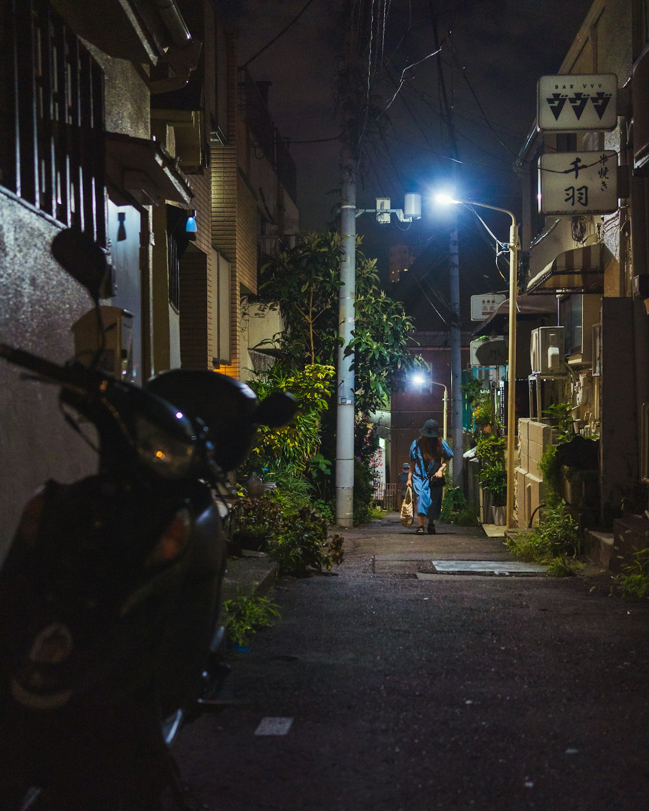
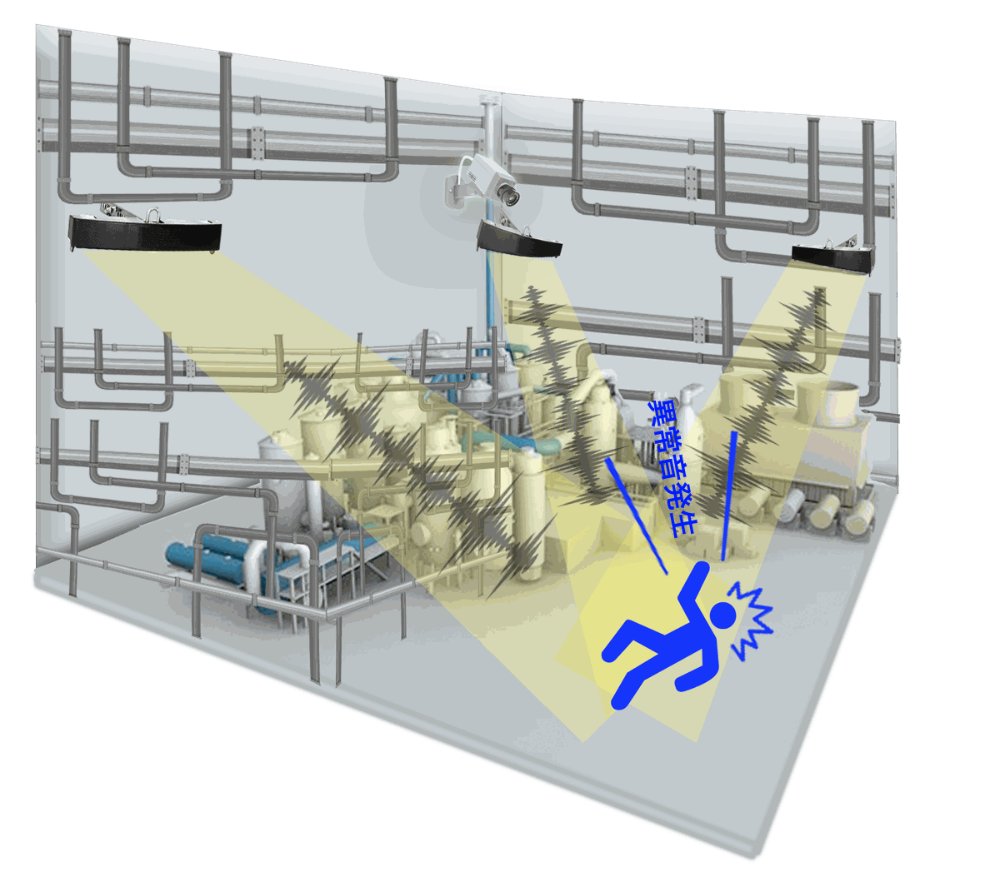

カメラの死角を、
音で確認します
同じ音響技術を、都市の騒音管理、産業現場の安全、設備点検の3つの用途に合わせて提供しています。用途ごとに、対象、設置位置、提供する画面を示します。
スマートシティ騒音観測
この項目でわかること自治体向け。対象の音、設置位置、提供する画面と、実証の数値
騒音苦情が繰り返される場所にセンサーを置くと、いつ、どこで、どの音が出たかが記録に残ります。担当職員が現場に出向かなくても、取り締まりの場所や時間帯、防音施設の設置位置を記録に基づいて決められます。
| 項目 | 内容 |
|---|---|
| 主な対象 | 二輪車騒音、工事騒音、クラクション、生活騒音の苦情が多い地域 |
| 設置位置 | CCTV支柱、車両検知システムの支柱など既存の設備 |
| 提供する画面 | リアルタイムの管制画面、地点別・時間帯別の騒音記録、苦情対応のレポート |

記録を使う人
- 住民
- 自宅の前で夜間の騒音がどれくらい繰り返されているか、ほかの地域と比べてどうかを確認できます。
- 行政
- 取り締まりの時間帯と場所、防音施設の設置位置を、記録に基づいて決められます。
- 政策
- 蓄積したデータから生活騒音の指標を作り、施策の効果を評価できます。
実証の数値
- 設置地域の騒音苦情
- 約60%の減少始興市ペゴッ地区、2025年12月〜2026年6月、設置地域に限る
- 音の分類精度
- 95%以上目標達成の報告2025年 最終報告書の基準
実証の数値は設置地域に限った結果です。取り締まりは行わず、観測と案内だけで運用しました。詳しくは導入事例をご覧ください。
産業安全の異常音検知
この項目でわかること企業向け。カメラの死角を音で補う仕組みと、異常音が鳴ったときの流れ
CCTVは、レンズが向いている場所しか映せません。CUSMOSのセンサーは広い範囲の音を聞き、事故音や設備の異常音が鳴ると発生位置を計算して、近くのカメラをその方向に向けます。
韓国では2024年1月から、重大災害処罰法の対象が従業員5人以上50人未満の事業所にも広がりました。事故を早く把握し、対応の記録を残すことが、これまで以上に重要になっています。

異常音が鳴ったときの流れ
| 段階 | 内容 |
|---|---|
| 01異常音の発生 | 現場のどこかで、事故音や設備の異常音が鳴ります。 |
| 02検知・位置推定 | センサーが音を分類し、発生した位置を計算します。 |
| 03CCTVの連動 | もっとも近いカメラを、その位置に向けます。 |
| 04管制への通知 | 映像と一緒に管制室へ通知し、記録を残します。 |
泰安火力発電所でのPoC結果は、導入事例で確認できます。
携帯型超音波カメラ
この項目でわかること企業向け・設備点検。故障箇所を画面で見つけるカメラの仕様と使い方
センサーが異常を知らせると、点検担当者がこのカメラを持って現場に向かいます。設備の映像に、超音波が出ている場所を色で重ねて表示するため、故障箇所をすぐに見つけられます。
| 項目 | 内容 |
|---|---|
| 画面 | 7インチディスプレイ |
| 連続使用時間 | 2時間以上 |
| センサー | マイクアレイ、カメラ、温度センサー |
| 機能 | 音響映像の録画、音声出力 |

使い方の流れ
| 段階 | 内容 |
|---|---|
| 01異常音を見つける | 携帯型カメラで、異常音が出ている設備に向けます。 |
| 02音響信号を処理する | マイクアレイで捉えた超音波の発生位置を計算します。 |
| 03映像を重ねる | カメラ映像の上に、音響映像を色で重ねます。 |
| 04画面で確認する | 問題の箇所を画面で確認し、録画して記録に残します。 |
導入の流れ
この項目でわかること相談から運用サポートまでの4段階
| 段階 | 内容 |
|---|---|
| STEP 01ご相談 | 設置場所、対象となる音、解決したい課題を伺います。 |
| STEP 02現地調査 | 音の環境と、取り付けに使う既存設備（CCTV支柱、車両検知支柱など）を確認します。 |
| STEP 03設置 | 既存の支柱などに取り付け、測定を始めます。 |
| STEP 04運用サポート | 記録の見方と、運用の進め方をサポートします。 |
※ 上記は一般的な流れです。案件ごとに、確認の順番や必要な期間は変わります。導入前に確認したいことは、トップページの「設置」にまとめています。
資料請求・
お問い合わせ
この項目でわかること現場に合う構成の相談と、資料請求の方法
設置場所と解決したい課題をお知らせいただければ、構成案をご提案します。ご連絡はメールで差し上げます。